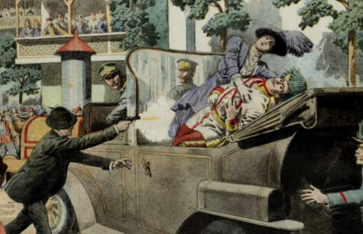
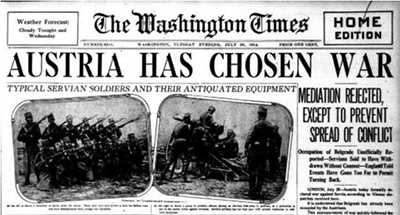
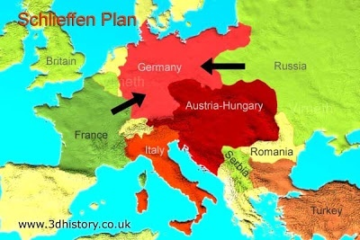
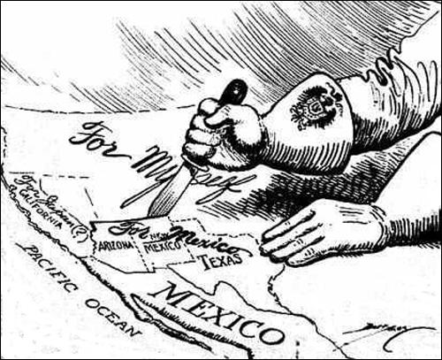
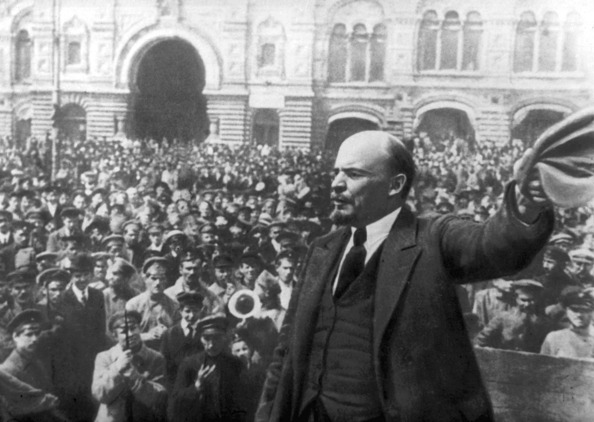

What was the event that sparked the declarations of war that led to WWI?
The assassination of Archduke Franz Ferdinand of Austria by Gavrillo Princip, a Serbian nationalist. More information here
Which country was the first to declare war? Who did they declare war on?
Austria Hungary first declared war on Serbia. More information here
Which country declared war on both France and other allied powers on one front and Russia and later Romania on the other, leading to them fighting a two-front war?
Germany More information here
What message was intercepted by allied forces and sent to the United States, leading to them declaring war on Germany, entering the war in 1917?
The Zimmerman Telegram, a message from Germany to Mexico requesting their alliance if the U.S. ever joined the war. In return they promised Mexico Texas, New Mexico and Arizona. More information here
Which country, in response to the heavy casualties in its military and the authoritarian rule formed during the war, had a socialist revolution led by the working class beginning in 1917?
Russia More information here
